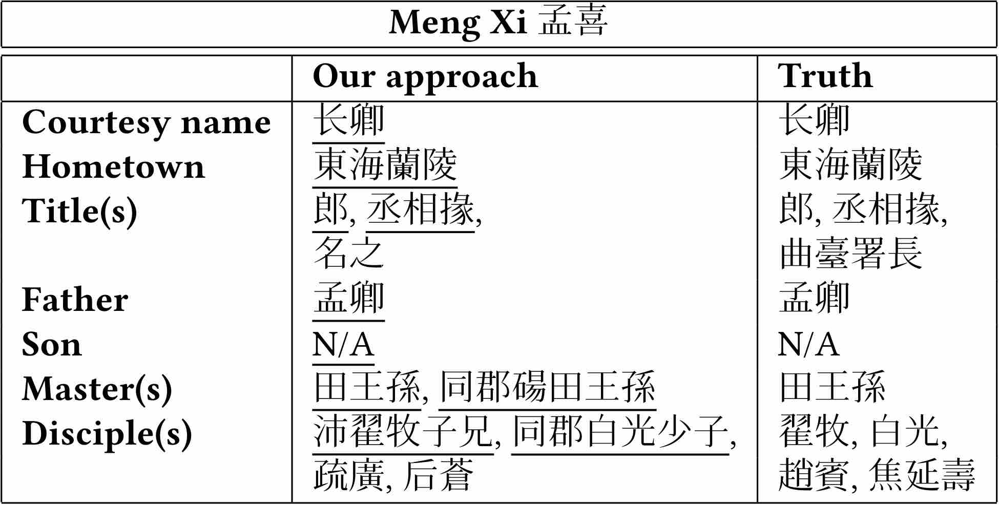
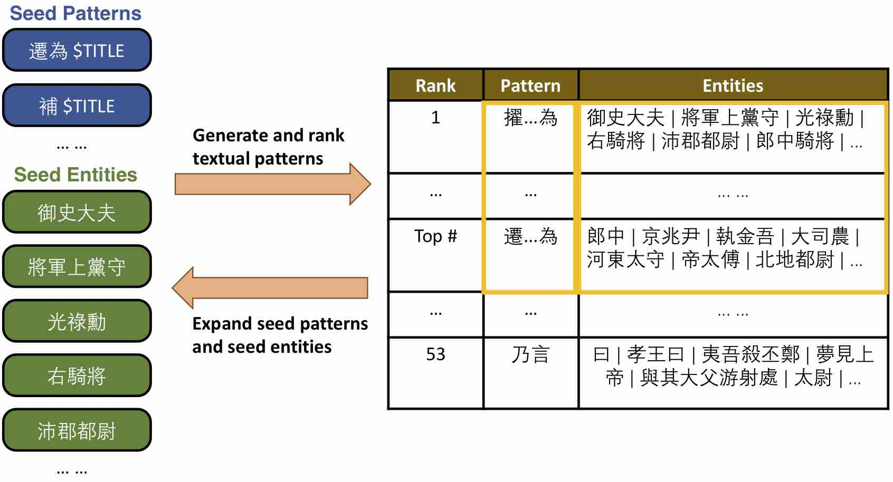
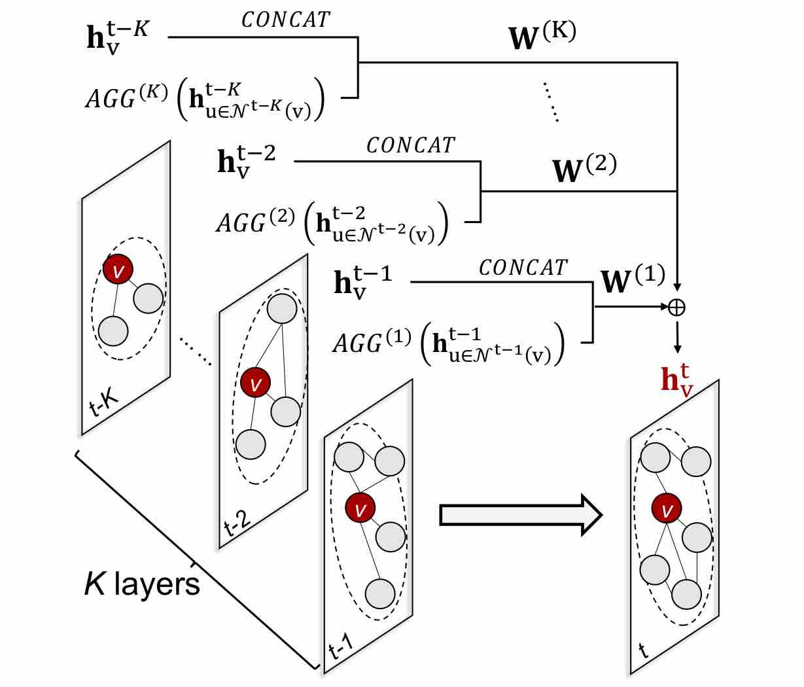
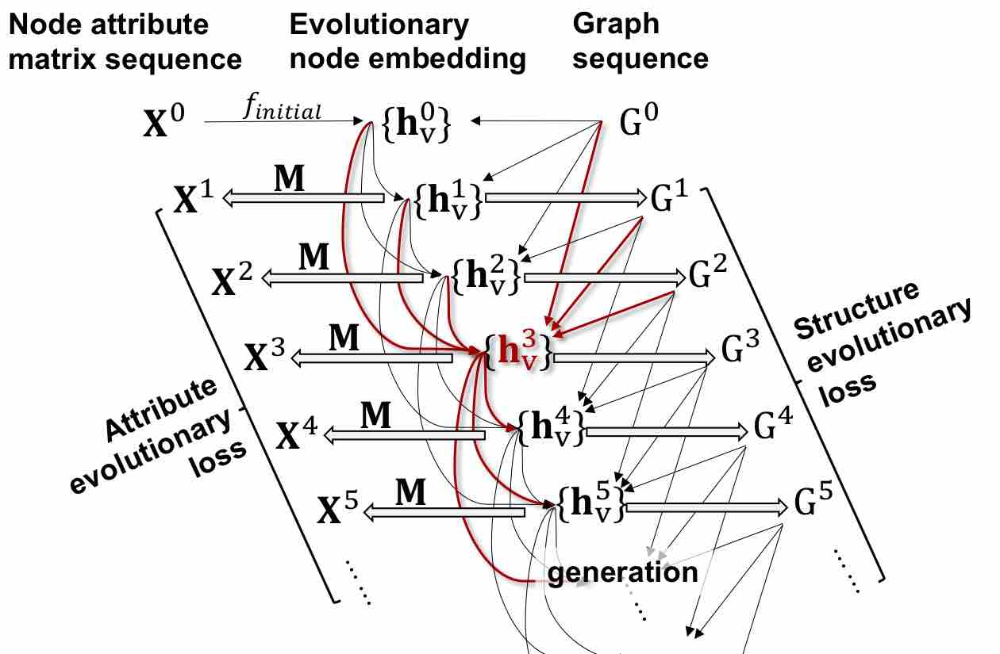
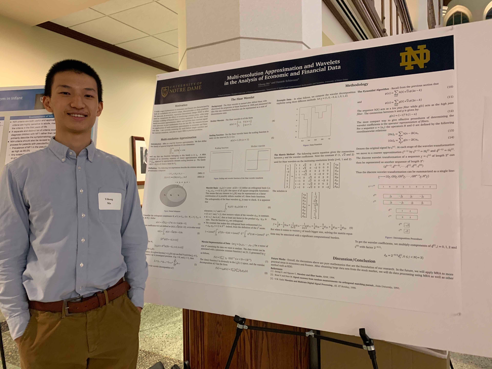

Research
Information Extraction in Classical Chinese Historiography
|  |  |
I worked to construct an unsupervised model to generate profiles for historical figures by extracting person entities and their biographical information from a set of classical Chinese histography. I have made the following contributions to the project:
|
Evolutionary Graph Neural Networks
|  |  |
I worked in team to build a framework of evolutionary graph neural networks to generate node embedding series from the a set of graph series, instead of a single static graph. I have made the following contributions to the project:
|
Paired Voxel-to-Voxel Translation in Large-Scale 3D Streamlines Data Using Deep Learning
|
|
I worked in team to design a novel deep learning framework as a general-purpose solution to the variable-to-variable translation problem for multivariate time-varying data (MTVD) analysis and visualization. I have made the following contributions to the project:
|
Multi-resolution Approximation and Wavelets in the Analysis of Financial Data
|  |
I worked to construct a model for predicting stock prices, leveraging algorithms in wavelets analysis and machine learning. I presented my work at Fall Undergraduate Research Fair (FAIR) at University of Notre Dame and please check the picture on the left. I have made the following contributions to the project:
|